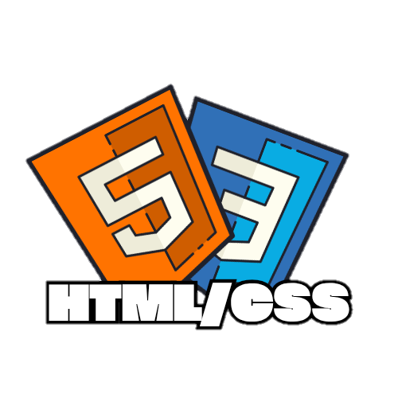
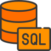

Lenguajes 📟
HTML/CSS
La base del intenet y las páginas web, HTML y CSS, Tu navegador es capas de interpretar los archivos ".html", estos son la estructura de una página, dan las indicaciones a tu nevegador de como mostrar la página, mientras tanto CSS dota a la página de una buena presentación, se encarga de lo gráfico y lo estético.
Este link te llevara a una decripción más detallada de estos lenguajes de programación

Java
Java es un lenjuage complicado, tiene un próposito general y variado
Este link te llevara a una decripción más detallada de estos lenguajes de programación

JavaScript
JavaScript es una de las bases de la web moderna otorga interactividad a las páginas web, registra, arroja y guarda información de uso rápido, inputs, botones y resultados.
Este link te llevara a una decripción más detallada de estoslenguajes de programación

Python
Python es un lenguaje con la sintaxis más fácil de aprender, es muy parecida al inglés y cuenta con múltiples librerias.
Este link te llevara a una decripción más detallada de estoslenguajes de programación

SQL
SQL permite crear una base de datos, su sintaxis se basa en tablas, sería como un excel, pero SQL no cuenta con una interfaz gáfica.
Este link te llevara a una decripción más detallada de estoslenguajes de programación
